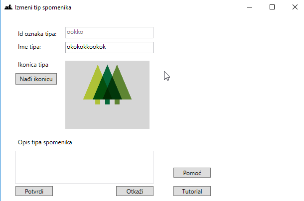
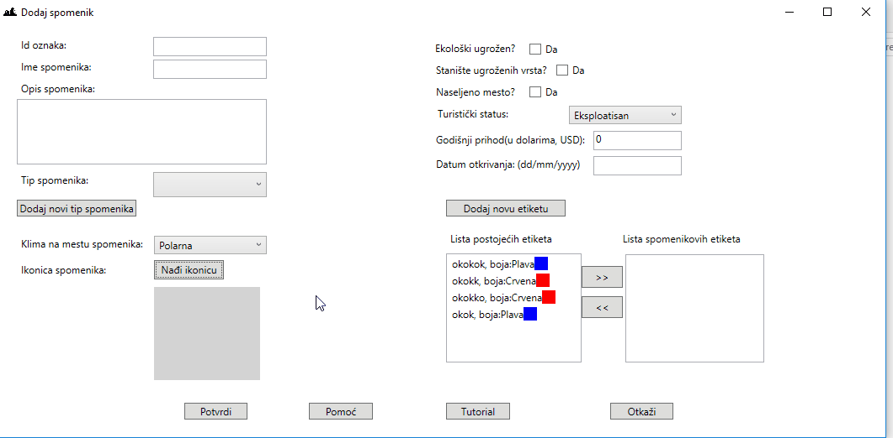

Pocetna Spomenici Tipovi spomenika Etikete Tabela spomenika Tabela tipova spomenika Tabela etiketa
Rad sa tipovima spomenika

Slika: forma dodavanja ili ažuriranja tipa spomenika
Teorijski deo o tipovima spomenika (sa početne stranice pomoći):
Kao što je već navedeno, spomenik prirode može da bude, ali nije obavezno:
- geološki (hidrogeološki, paleontološki, petrološka, mineraloški, strukturnogeološki i dr)
- geomorfološki
- speleološki (pećina, jama i dr)
- hidrološki (ceo ili deo vodotoka, kao slap, jezero dr.)
- botanički (retki ili značajni primerci biljnog sveta, kao pojedinačno stablo, drvoredi, parkovi, botaničke bašte i dr).
Napomena: ne moraju postojati u okviru aplikacije, sami birate šta ćete dodavati i menjati u okviru aplikacije.
U okviru aplikacije:
Tip spomenika je opisan preko svoje jedinstvene ljudski-čitljive oznake koju unosi korisnik,
imena, ikonice, i opisa. Ikonica je sličica koja se učitava i koja se koristi da se taj tip
spomenika označi na mapi.
Aplikativni deo rada sa tipovima spomenika:
Pomoću ovog dijaloga možete dodati ili ažurirati tip spomenika popunjavanjem polja i pritiskom na dugme "Sačuvaj". Obavezno polje za unos je "Id oznaka tipa" i "Ime tipa", ostala
polja su opciona.
Polja za unos:
- "Id oznaka tipa" - Jedinstvena ljudski čitljiva oznake tipa spomenika u okviru aplikacije.
- "Ime tipa" - Proizvoljan naziv tipa spomenika.
-
"Ikonica tipa" - Klikom na dugmi "Nađi ikonicu" može se pristupiti slikama koje postoje na računaru odakle pokrećete aplikaciju.
Animacija ispod služi da predstavi kako bi to moglo da izgleda, ovde konkretno za tip spomenika, a na animaciji za spomenik (isti način).

Animacija: Primer dodavanje ikonice spomeniku.
Klikom se otvara forma sa izbor slike iz nekog fajla iz računara i na tom ili nekom drugom mestu možete odabrati
ikonicu koja vam odgovara klikom na nju jednom pa pritiskom dugmeta "Open", ili dvoklikom na sliku se automatski dodaje
na formu za spomenik.
- "Opis" - Predstavlja detaljniji opis datog tipa spomenika.
Pritiskom na dugme "Potvrdi" će se dodati novi tip spomenika.
Pritiskom na dugme "Odustani" prozor se zatvara bez čuvanja podataka koje ste uneli.
Pritiskom na dugme "Tutorial" otvoriće se odgovarajući tutorial za ovaj prozor ukoliko postoji.
Pritiskom na dugme "Pomoć" otvoriće se ponovo ova pomoć. Pomoći možete pristupiti i pritiskom na dugme na tastaturi F1 iz forme spomenika.
Tutorial za ovaj prozor
Ovde će biti opisano komponenta po komponenta koja se spominje kao i njihov celokupan opis:
- "Id Tipa" - Unosom sa tastature unesi identifikaciju tipa spomenika, potrebno je da bude jedinstvena. Klikom van ovog polja, gubi se fokus sa ovog polja i ne može se više unositi. Kliktom na ovo polje se možes ponovo vratiti na unos.
- "Ime Tipa" - Unosom sa tastature u ovo polje možete uneti vama prepoznatljivo ime po kojem će te pamtiti kreirani podatak.
- "Nađi ikonicu" - Klikom na ovo dugme možete odabrati u računaru željenu sliku za ovaj podatak. Slika će se prikazati u velikom polju i tako će izgledati u daljem radu. Kliknite na 'Sledeći' ispod ovog teksta da biste videli okvir gde će se pojaviti slika.
- "PutanjaIkone" - Vizuelni prikaz odabrane slike.
- "Opis Tipa" - Unosom sa tastature potrebno je uneti dodatne informacije o ovom podatku. Klikom van ovog polja, gubi se fokus sa ovog polja. Kliktom na ovo polje se možete ponovo vratiti na unos.
- "Potvrdi" - Klikom na ovo dugme se potvrđuje pravljenje novog podatka sa unetim sadržajem u okviru ovog prozora. Podatak će postojati u okviru tabele.
- "Otkaži" - Klikom na ovo dugme se otkazuje kreiranje novog podatka i vraća se u prozor odakle je otvorena ovaj prozor.
- "Pomoć" - Ovde se nalazi dodatna pomoć koja može biti korisna u vezi znanja o tipovima spomenika, ili celokupna dokumentacija ovog tutoriala (ukoliko postoji). Takođe, pritiskom na dugme F1 na tastaturi možete otvoriti isti prozor koji se dobija klikom na ovo dugme.
- "Tutorial" - Klikom na ovo dugme možete pokrenuti tutorial za ovaj prozor.